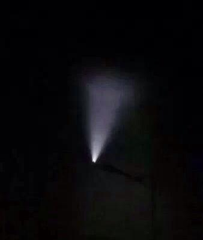
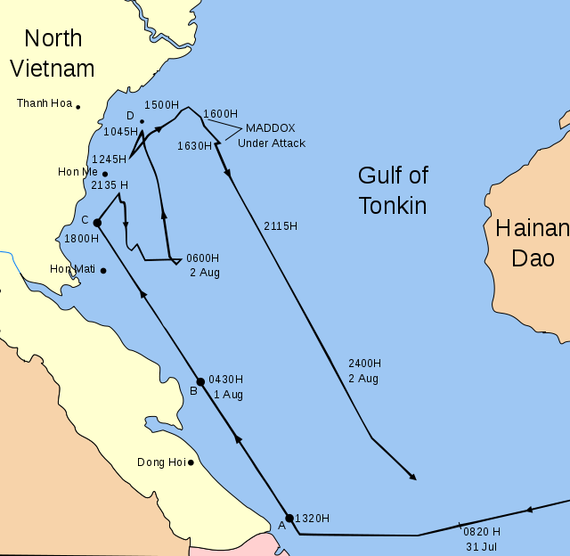

2014-07-28 21:02:00
中共在七月23日進行反導試験後，美國國務院副發言人（Deputy Spokesperson）Marie Harf召開記者會，稱中共“對世界各國所依賴的外太空環境的長期安全和可持續性構成了威脅”云云。美國向來是只許自己放火，不許别人點燈，這類八股大家見怪不怪；真正嚇人的是Marie Harf把這次試験稱為無毀傷的反衛星試験（Non-destructive Anti-Satellite Test），這是一個很低級的錯誤。中共的確進行了一個很可能是反衛星導弹的測試，但是那是七月9日在太原舉行的。美國的間諜衛星滿天飛，不可能會弄不清楚，所以這很明顯地是在中央情報局通報給國務院的過程中把两件事搞混了，錯誤是出在某個寫公文的小官僚身上。

七月9日民眾拍到的反衛星飛弹
說起中央情報局送出錯誤情報導致嚴重的後果，大家自然會想起2003年小布希搞的伊拉克侵略戦争；其實那次是布希派人到中央情報局强迫編出錯誤的分析，和這類小官僚自己無心出的錯大有不同。歷史上無心錯誤導致美國對外開戦早有先例：1898年的美西戦争就是因為美國戦艦緬因號（Maine）在古巴意外爆炸，給美國人一個極佳的藉口來對西班牙宣戦；不過美國覬覦西班牙在亜洲和美洲的属地已久，那一仗早晚總是要打的，美國自己也不覺得那次情報分析錯了有什麼不好。另一個前例則没這麼光彩，那就是越戦的起點：東京灣事件（Gulf of Tonkin Incident，中共稱之為“北部灣事件”）。

東京灣事件中，USS Maddox的航線
1964年八月2日，詹森（Johnson）總統還在考慮是否對北越宣戦，驅逐艦USS Maddox被送到北越领海邊緣搜集情報，闖進北越领海後，遭遇到三艘北越鱼雷艇的攔截，在领海線外主動開火把這些小艇痛揍了一顿，打死了四名北越士兵，Maddox自己毫髮無傷。依美國的傳統邏輯，我們來打你是你的榮幸，你敢還手就是大不敬，可是詹森覺得事件還不够嚴重，於是两天後Maddox和另一艘驅逐艦USS Turner Joy又重回了東京灣，任務是“Show the Flag”，也就是示威。這一次又直接開進了北越领海，不幸的是當天狂風巨浪，在黑夜中北越的小艇根本不敢出海，而Maddox的雷達和聲納受波浪干擾，不斷地出現假信號，於是花了四個小時火力全開，到半夜一點，艦長Herrick才下令停火，清點戦場，那當然是什麼都没有的。Herrick做為一個職業軍官，倒也還誠實，老老實實地報告了前因後果，結論是他不能確定北越是否出動了艦艇。本來美軍來示威，敵人縮頭做烏龜，應該大事化小，小事化無，皆大歡喜，可是第二天NSA（National Security Agency，國家安全局，就是最近鬧出監聽全球電訊醜聞的那個機構）截聽到北越的電報，翻譯員把原文裡面討論八月2日受損情况的越南文翻譯錯了，變成了北越“再次”攻撃。這雖然是個低級的錯誤，因為當時總統急着要情報，所以没有經過審察第一時間就以快報送到白宫，白宫當然回頭要求完整的報告，這時NSA在越南的越南文主管才有時間仔細讀了手裡的資料，馬上發現了錯誤。他要是老實承認，一顿訓斥是免不了的，說不定還要記大過，一輩子的前途就完蛋了，所以乾脆將錯就錯，寫了一篇情文並茂的報告，指證歷歷，說是北越絶對攻撃了Maddox和Turner Joy，當天詹森總統就發表緊急演說，指責北越進行了珍珠港式的“偷襲”；参議員Morse只看到了Herrick的報告，向詹森抗議證據不足，但詹森以有絶對機密的證據為理由，堅不妥協，六天後美國國會就在無法験證NSA報告的前提下，授權詹森總統派兵進駐越南，越戦由此爆發。
這個離奇的故事是百分之百的史實，甚至Wikipedia都有了記載。不過美國自已到2000年才完全搞清楚其究竟，那個害死了五萬八千名美軍士兵的NSA主管早就光榮退休了。本來這段歷史還有可能幫助美國避免侵略伊拉克的大錯誤，可是正因如此，小布希政府把它壓着不許公開，直到2005年，美國全國都知道被小布希騙了，媒體才敢發表這段故事（第一個發表的是支持民主黨的紐約時報）。其實這故事的另一個教訓是絶對機密代表着絶對的權力，而絶對的權力當然會造成絶對的腐化，可是歐巴馬顯然是不讀歷史的，仍然放任NSA横行天下；物必自腐而後蟲生，美國的衰敗其實是自作孽。
【後註一，2022/09/06】幾年前我注意到這篇對中途島戰史翻案的文章（參見《Mitscher and the Mystery of Midway》），認爲相當有説服力，原本想要寫一篇博文介紹，後來先擱在一邊。今天整理舊資料時翻出來，覺得在後註簡單討論即可；我推薦所有對軍事歷史有興趣的讀者去仔細研讀一番。
這篇文章所檢視的議題，是美國海軍在中途島戰役中，依靠著情報破密成功，預先集結了優勢空中戰力，以伏擊日本的航母艦隊。然而佔總兵力（由三艘航母和中途島陸軍航空兵共四個聯隊組成）四分之一的Hornet號艦載機聯隊卻基本撲空，沒有參與實際作戰；絕大部分戰果由Enterprise和Yorktown聯隊獲取。事後當然有官方的調查，但其報告所給的解釋既不合理、也和參戰官兵的回憶相違。這篇文章的作者給出一個符合所有客觀事實證據、人性、以及邏輯的解釋，從而暴露了美國海軍僞造歷史以遮掩錯誤的又一個案例。